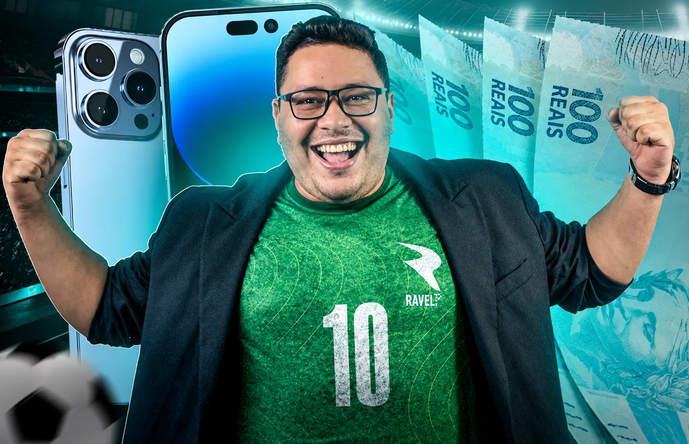
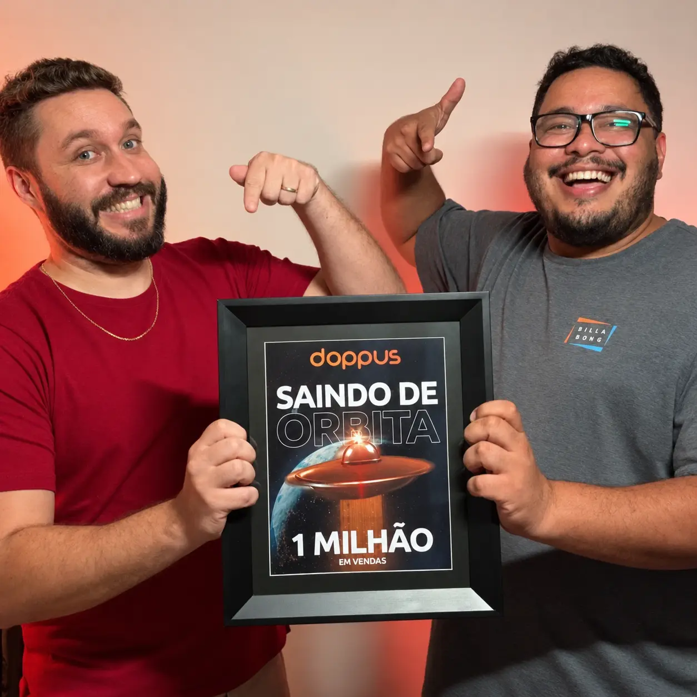
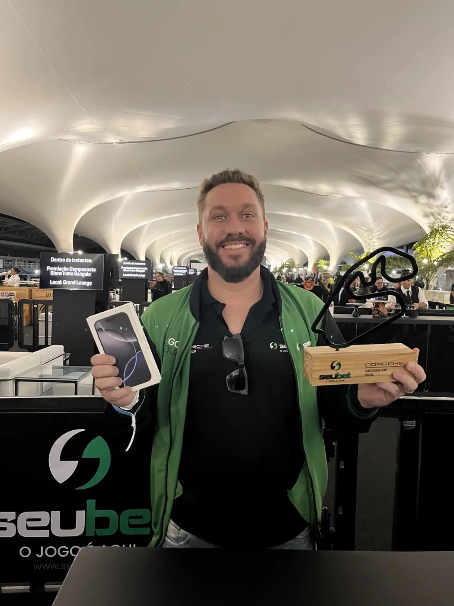
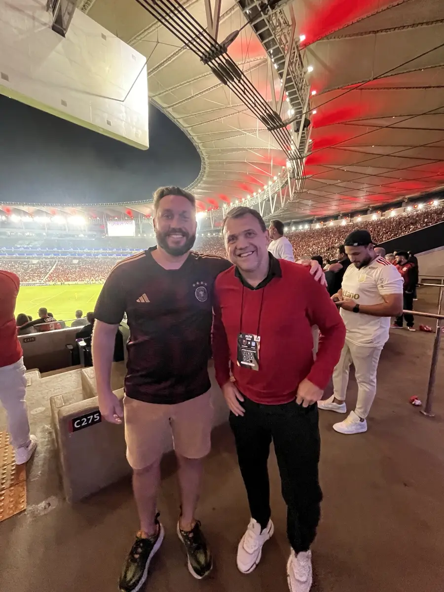
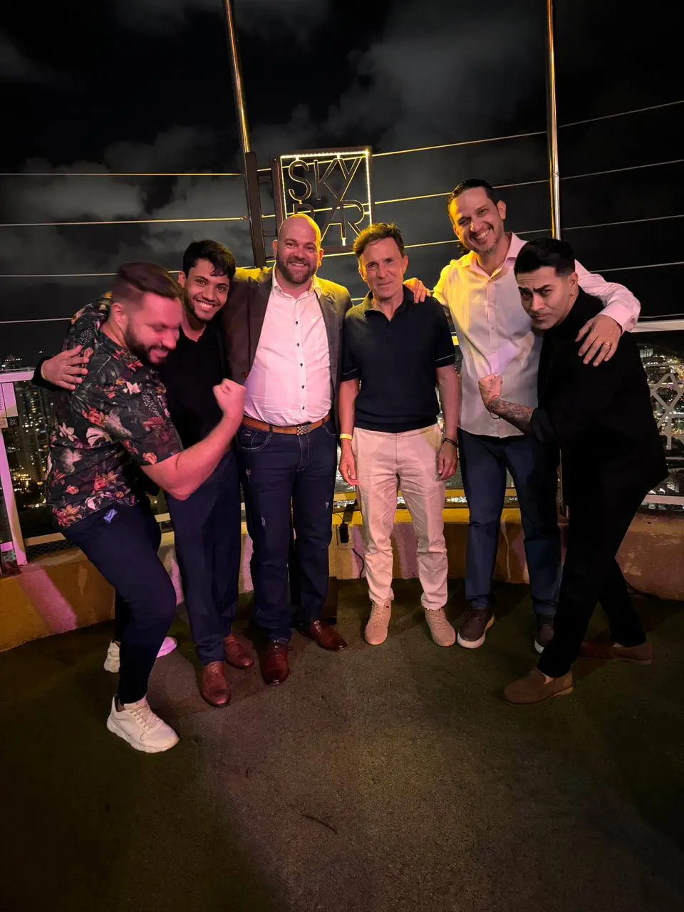

Estruturei a oferta
Reorganizei o produto, os planos e a proposta comercial para criar uma oferta clara e vendável.
Produtos digitais para iGaming
Crio, estruturo e escalo produtos digitais, da concepção à aquisição, conversão e crescimento da operação.
Conheça meus casesCase 01
O produto já existia, mas ainda não tinha uma estrutura capaz de vender e escalar. Minha missão foi transformar iniciativas isoladas em uma operação integrada.

Reorganizei o produto, os planos e a proposta comercial para criar uma oferta clara e vendável.
Conectei aquisição, canais, conversão e vendas em uma jornada com começo, meio e continuidade.
Liderei marketing, comercial, equipe e evolução do produto, definindo prioridades no dia a dia.

Uma das premiações do caminho que levou a operação a superar R$ 3 milhões em faturamento.
Case 02
O projeto começou com uma oportunidade de mercado. A partir dela, construí o produto, posicionei o expert e desenvolvi a estrutura de aquisição que levou a operação ao topo.
Transformei uma possibilidade de mercado em conceito, proposta e direção estratégica de produto.
Defini imagem, comunicação e autoridade para tornar o expert reconhecível e confiável para a audiência.
Estruturei oferta, jornada de vendas, criativos, campanhas e conversão desde o primeiro lançamento.

Case 03 · Mansão Green
Em uma operação afiliada desenvolvida com a Mansão Green, transformei consistência de campanha em performance reconhecida pela Sportingbet.
Defini o direcionamento da operação, as prioridades de aquisição e os caminhos para ganhar competitividade.
Conduzi campanhas e ajustes de comunicação para transformar oportunidade em resultado recorrente.
Acompanhei a performance e otimizei continuamente a operação para sustentar sua evolução no ranking.

Viagem com tudo pago conquistada pela performance no ranking de afiliados.
Case 04 · Visão pelo lado da casa
Minha experiência dentro de uma casa de apostas ampliou a visão que eu já tinha como criador de produtos e afiliado: passei a analisar o mercado a partir das decisões da própria operação.
Mapeei o cenário brasileiro e os principais concorrentes para identificar oportunidades e barreiras de entrada.
Estruturei caminhos de diferenciação para uma marca que precisava competir em um mercado com ofertas muito parecidas.
Transformei a análise em uma estratégia direcionada ao público brasileiro, apresentada e aprovada pela direção.

Validação profissional
Visões de quem construiu produtos, negócios e estratégias comigo.
“Construímos uma operação do zero, e Phillipe foi fundamental para transformar ideias em estrutura, equipe e resultado. Ele conecta estratégia, tráfego, vendas e operação e assume responsabilidade pela execução.”
“O planejamento desenvolvido por Phillipe para nossa entrada no Brasil demonstrou profundidade de pesquisa, visão de mercado e domínio de posicionamento, canais, orçamento e indicadores. O trabalho foi muito bem recebido pelas equipes brasileira e internacional.”
“O Phillipe criou o Nick do Virtual do zero. Ele identificou a oportunidade, construiu meu posicionamento como expert e estruturou produto, funis, criativos e aquisição. Sua visão e execução foram fundamentais para transformar a ideia em uma operação reconhecida como Top Afiliado SeuBet.”
Stack de trabalho
Plataformas que utilizo para construir aquisição, conversão e operação de ponta a ponta.
Atuação prática